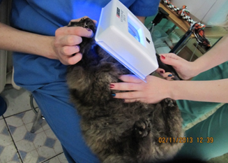

Ветеринарный врач – дерматолог
В клинике любой врач владеет методикой микроскопии соскобов кожи животных, поэтому затруднений с диагностикой дерматологических заболеваний нет. В сложных случаях на помощь приходит лаборатория ветеринарного факультета, где наши доктора ежедневно могут проконсультироваться.
Дерматофия (лишай)
Это инфекционные заболевания, вызываемые дерматофитами (плесневыми грибами) такими как Microsporum canis, M. gypseum, Trichophytonmentagrophytes. Дерматофития является заразным грибковым заболеванием (так называемый лишай). Вызывает поражение поверхностных слоев кожи, волос (шерсти) и когтей.
Чаще болеют молодые или старые животные, со слабым иммунитетом, а также обитающие в тесном контакте друг с другом (питомники). Заболеванию подвержены дети и пожилые люди. Заражение происходит при непосредственном контакте с инфицированным носителем, местом, подстилкой или через поражённые предметы. Период заражения длиться от 4 до 30 дней. Споры могут быть активны в сухом месте в течение нескольких лет. Например: M. gypseum содержится в почве и вызывает заражение у любителей покопаться в земле или цветочных горшках. M. сanis находится на кошке или собаке, особенно длинношерстных (персидские кошки, йоркширские терьеры). При этом не проявляются кожные поражения, но в шерсти и кожных чешуйках содержатся споры. А вот T. mentagrophytes чаще переносят грызуны, под угрозой оказываются охотники на крыс и мышей.
Клиническая картина различна, в зависимости от вида грибка и иммунитета пораженного животного. На снижение иммунитета могут повлиять различные факторы: поражение блохами или клещами, глисты, вирусная инфекция, плохое питание, длительное лечение, беременность, лактация, новообразование и некоторые заболевания (сахарный диабет, гиперадренокортицизм).
Типичное поражение начинается с незначительного воспаления, начинаясь как прыщик (папула) или укус, переходит в округлое безволосое розово-серое пятнышко, с шелушением и каймой по краю. Рост происходит от центра к краям (периферии). Не типичное: пятно или папула могут быть единичными (фолликулит, фурункулёз, керион), или их может быть несколько и распространяются обширно до 50 % кожного покрова и более (диффузная алопеция, себорея, милиарный дерматит), а также поражать подушечки лап, когти (онихомикоз). Первые пятнышки появляются, как правило, на лапах и голове (морда, уши). Зуд возможен сильный и не очень. Сильный зуд может приводить к образованию эозинофильной гранулёмы, расчесам (экскориации), ранам и экземам.
В диагностике заболевания можно использовать Лампу Вуда (люминесцентная диагностика). Она поможет оценить общее состояние кожного покрова, выявить скрытые либо только начавшееся поражения. При положительном результате наблюдается желтовато-зеленое свечение, особенно на удаленных из места поражения стержнях волос. Но только 50% культуры грибов даёт свечение. На ложноположительный результат также влияют множество факторов: не прогретая лампа, обработка кожи или шерсти различными препаратами, бактериальная инфекция

Наиболее точный метод на выявления грибковой инфекции – микроскопическое исследование. Удаленные волосы помещают в раствор или минеральное масло, проводят микроскопию на наличие артроспор. Длительность исследования 30-60 мин.
Но самым достоверным методом, который определит не только наличие грибка, а и его вид, является культивирование грибов (посев на питательную среду). Для посева используют материал, взятый с животного (кожные чешуйки, шерсть, когти) или с окружающей среды (подстилка, средства ухода, мебель). Длительность посева 10-14 дней.

В зависимости от длительности и обширности заболевания и иммунитета, используют различное лечение. От применения мазей, кремов и антигрибковых вакцин, до системных антибиотиков и иммунотерапии. Также проводят дезинфекцию помещения. Чистка пылесосом – полов, ковров, мебели и мягких тканей. Мытьё дезсредствами и опрыскивание энилконазолом. По возможности выбрасывание подстилок, домиков, щеток, игрушек и др.
После лечения, которое может длиться: от 20 дней до 6 месяцев и более, нужно обязательно пройти повторное (контрольное) исследование на наличие дерматофитозов.
Аллергический дерматит
Это группа заболеваний кожи, связанные с иммунодефицитными состояниями организма собаки или кошки. В свою очередь аллергический дерматит делится на: аллергические нарушения, паразитарную аллергию и аутоиммунные заболевания.
Аллергические нарушения.
Крапивница и ангионевротический отек – иммуно-обусловленная аллергическая реакция 1-го и 3-го типа, вызывающая на коже локализованные или генерализованные волдыри или припухлости, зуд, экссудацию. Может быть смертельным, если отек захватывает область глотки и гортани.
Атопический дерматит – генетически предрасположенная аллергическая реакция 1-го типа организма на аллергены окружающей среды. Проявляется наиболее часто зудом области морды (уши, шея), нижние участки конечностей, обл. локтевых суставов и живота. У кошек алопеция (облысение) живота или на боках, милиарный дерматит, эозинофильная гранулёма, крапивница, конъюнктивит, блефарит, отит, пиодерма, малассезиозный дерматит, дерматит в перианальной обл. ( области ануса), расстройства желудочно-кишечного тракта.
Пищевая аллергия – реакция организма на определённые (непереносимые) компоненты пищи. Реакция 1-го, может 3-го, 4-го типа. Зуд чаще в нижней части конечности, в подмышечной и паховой области. Облысения на животе или на боках, милиарный дерматит, эозинофильная гранулёма, крапивница. Нарушения со стороны желудочно-кишечного тракта.
Контактная аллергия – реакция на растения, лекарства, дезодоранты и др. вещества. Пятнисто-папулёзная сыпь (эритемы, папулы, пустулы), облысения, пигментации, уплотнение кожи. Распространённость на животе, грудной клетке, области шеи, промежности, на подушечках лап.
Паразитарная аллергия
Аллергический блошиный дерматит – дерматит вследствие аллергии на укус (слюну) блох. Проявляется зудом, милиарным дерматитом, облысением, эозинофильной гранулёмой. Гиперчувствительная реакция на насекомых или членистоногих – реакция в месте укуса, развивается в течение нескольких часов. Поражения: узелки, папулы, изъязвления, покраснения, корочки.
Отодектоз – отит вследствие поражения слухового прохода клещами Otodectes. Отек, покраснение, воспаление, расчесы ушной раковины.
Аутоиммунные заболевания
Пузырчатка, красная волчанка, токсический эпидермальный некролиз, линейный дерматоз, амилоидоз, очаговая алопеция, васкулит.
Аллергический блошиный дерматит (АБД)
Самое распространённое и очень часто встречаемое заболевание у собак и кошек.
Кожная аллергическая реакция организма на укус (слюну) блох. Проявляется зудом - морда, задняя часть туловища. Милиарным дерматитом - шея, область холки, поясницы, бёдра. Самовызванная симметричная алопеция (чрезмерное вылизывание) - на боках или животе. Эозинофильная гранулёма – морда, бёдра, живот. А также: алопеции (безшерстные участки), гиперпигментация (изменения цвета шерсти), лихенизация (уплотнение кожи). Сильней всего АБД проявляется у животных подверженным и другим аллергиям (пищевая, контактная и атопический дерматит). Усугубляется заболевания присоединением вторичных инфекций (грибковой, бактериальной, паразитарной).

Характерные признаки заболевания, наличие блох или их фекалий, на животном. Блохи – небольшие кровососущие насекомые, коричневого цвета, с вертикально сплющенным телом, без крыльев, прыгающие. Фекалии – черно-красные точки, при раздавливании превращаются в красное пятно. Их обилие заметно на животе, подмышках или под ошейником. Рисунок 11,12.
При идентификации проводится влажный бумажный тест. Шерсть животного счесывается на белую, влажную бумагу. На листе проявляются красные точки, кровь из фекалий блох.
Для выявления аллергии - проводится внутрикожная проба с блошиными антигенами. Положительный результат при появлении в месте инъекции покраснения, отека или зуда.
Лечение и профилактика проводится индивидуально для каждого животного. Учитывается вес, возраст, величина шерстного покрова, среда обитания и стиль жизни животного, дата последней обработки, предыдущие препараты и заболевания. Для котят и щенков используют спреи. Для взрослых животных капли на холку. Длинношёрстые животные обрабатываются чаще или большим количеством препарата. Также частые обработки необходимы для животных, которые свободно выгуливаются или живут на первых этажах. Для длительности защиты от блох можно использовать ошейники от блох. Если срок ошейника или капель истекает необходимо повторно обработать животное. Любители купаться или купать своих животных, должны помнить, что обработки от блох проводятся за 4-ре дня до купания, или 4-ре дня после купания. Иначе препараты и обработка неэффективна. При наличии блох или их фекалий проводят обработку эффективными препаратами, каплями на холку для животного и дезрастворы для помещения, а также домик животного, будка, вольер и т.д.
При обработке помещения (дезинсекции) проводится тщательная чистка пылесосом, с уничтожением мешка. Чистка пола, плинтусов, мягких тканей и мебели. Опрыскивание инсектицидными препаратами. Ведь на животном находится только 10-20% насекомых, имаго (взрослых) питающихся кровью хозяина, остальные, включая яйца, личинки и куколки находятся в окружающей среде.
Необходимо обязательно проводить профилактику от блох и других эктопаразитов. Кровососущие насекомые вызывают не только аллергическую реакцию, но и передают через укус гельминтов и различные инфекции. Некоторые из них опасны для человека.
Милиарный дерматит (МД).
Это – множественные папулы с эритемой (красные прыщики), покрытые корочками. Обычно они образуются вдоль спины, обл. шеи (кошки). Задняя поверхность бёдер, область поясницы, низ живота (собаки). Это - симптом, может возникать как аллергическая реакция кожи на укусы блох и других паразитов, контакт с аллергенами окружающей среды или лекарственными препаратами. Неаллергический МД проявляется при дерматофитии, стафилококковой инфекции, пузырчатке, оспе. Также МД указывает на наличие зуда у животного, кошки или собаки. А иногда является самой причиной зуда. Рисунок 13, 14.
Эозинофильная гранулёма
Поражение, возникающее на коже, слизистых. Четко ограниченный, приподнятый (отёчный), желтовато-розовый, участок (бляшка). Иногда покрыт белыми точками (узелками), часто изъязвляющийся. Обнаруживается на коже задних поверхностях бёдер, боках, животе, области морды (подбородок). На слизистых в ротовой полости (губы, язык, десна) и область препуция. Чаще всего возникает вследствие зуда. Не исключена аллергическая реакция на раздражающие факторы (лекарства, растения, пыль, укусы, пища и т.д), воздействие паразитов, бактериальные или грибковые инфекции, вирусные инфекции, аутоиммунные заболевания и новообразования. Рисунок 15, 16.


 08:00 - 21:00
08:00 - 21:00